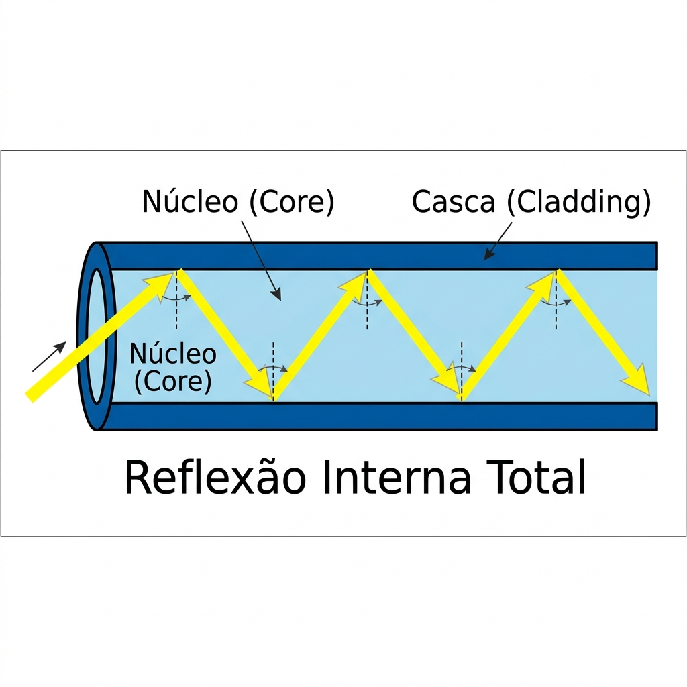
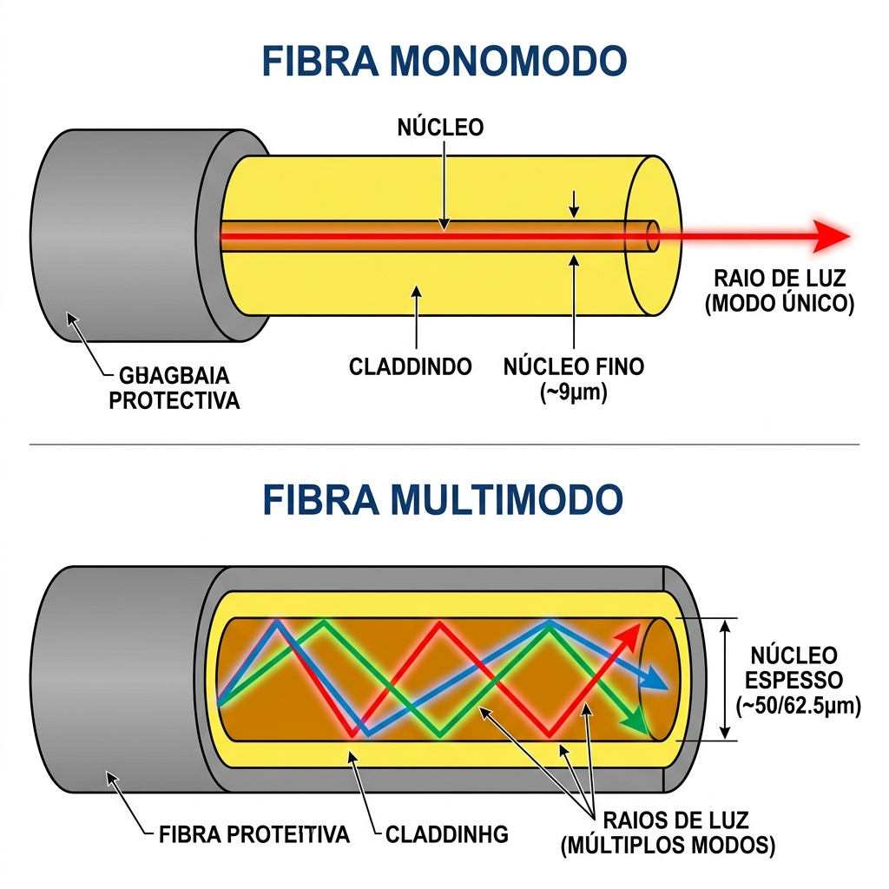

Instalações de Ambiente Computacional
Fibra Óptica
Transportando dados na velocidade da luz
Prof. Thiago Medeiros
Universidade do Estado do Rio de Janeiro
O Conceito da Fibra
1.1 — O que é Fibra Óptica?
Enquanto os cabos de cobre usam eletricidade para representar 0s e 1s, a fibra óptica usa pulsos de luz.
Definição Didática
É um fio de vidro puro, flexível, quase da espessura de um fio de cabelo humano, projetado para guiar a luz de uma ponta à outra sem deixá-la escapar.
- Vantagem Mágica: Como usa luz, é 100% imune a interferência eletromagnética (motores, raios, energia não afetam o sinal).
- Capacidade (Banda): Transporta uma quantidade absurda de dados por segundo (Terabits).
- Distância: O sinal viaja dezenas ou centenas de quilômetros sem precisar ser amplificado.
A Espinha Dorsal da Internet
Todo o tráfego global da internet (vídeos, jogos, nuvem) passa por cabos de fibra óptica submarinos que interligam os continentes no fundo do oceano.
1.2 — O "Corredor de Espelhos"
Como a luz não vaza do vidro e se perde no ambiente? O segredo é um princípio físico chamado Reflexão Interna Total.
Núcleo vs Casca
- O cabo possui um Núcleo (Core) de vidro puríssimo por onde a luz viaja.
- Envolvendo o núcleo, temos a Casca (Cladding), outro tipo de vidro que possui um índice de refração diferente.
- Essa diferença faz com que a Casca aja como um espelho perfeito. A luz bate nela e rebate de volta para o núcleo, ficando permanentemente presa.

Monomodo vs Multimodo
2.1 — Os Dois Tipos de Fibra
Existem dois tipos principais de fibra no mercado, escolhidos baseados na distância que o sinal precisa percorrer.

A diferença fundamental é o diâmetro do núcleo e como a luz viaja lá dentro.
Monomodo (Single-Mode)
O núcleo é finíssimo (9 mícrons). A luz (laser) tem apenas um caminho reto para seguir.
Ideal para longas distâncias (Backbones, cidades, países).
Multimodo (Multi-Mode)
O núcleo é mais grosso (50 mícrons). A luz (LED) se espalha em vários raios que vão "quicando" nas paredes de forma diferente, gerando bagunça no sinal se for muito longe.
Ideal para distâncias curtas (Dentro do mesmo prédio/Datacenter).
2.2 — Cuidados e Fragilidades
Apesar de transportar a espinha dorsal do mundo digital, a fibra exige manuseio muito delicado.
Os dois maiores inimigos:
- Curvatura: Lembre-se, o núcleo é feito de vidro! Se você dobrar o cabo em um ângulo muito fechado, o vidro quebra internamente ou o ângulo da luz fica tão acentuado que ela fura a "casca" e vaza (Atenuação).
- Sujeira: O caminho da luz é menor que um fio de cabelo. Um único grão de poeira microscópico no conector é como colocar uma rocha na frente de um farol.
Perigo à Visão!
A luz usada nos equipamentos profissionais de fibra óptica geralmente opera na faixa do infravermelho, o que a torna invisível ao olho humano.
NUNCA olhe diretamente para a ponta de uma fibra ligada. O laser invisível pode queimar sua retina permanentemente sem que você perceba.